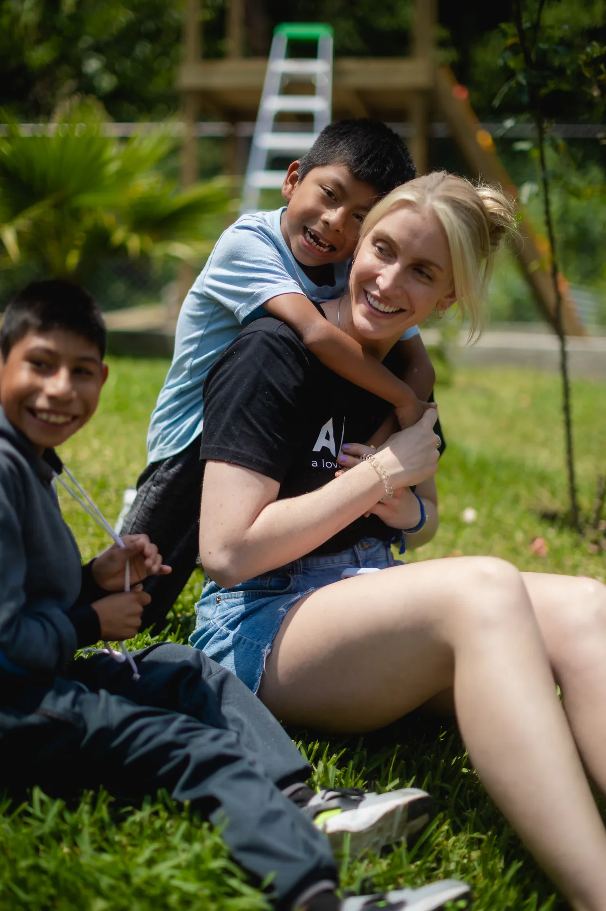
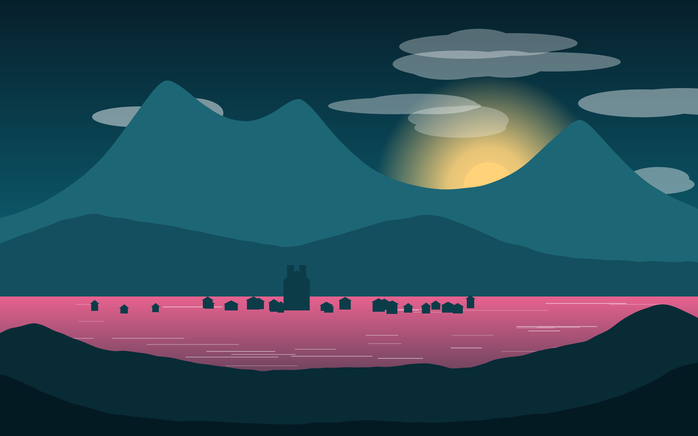
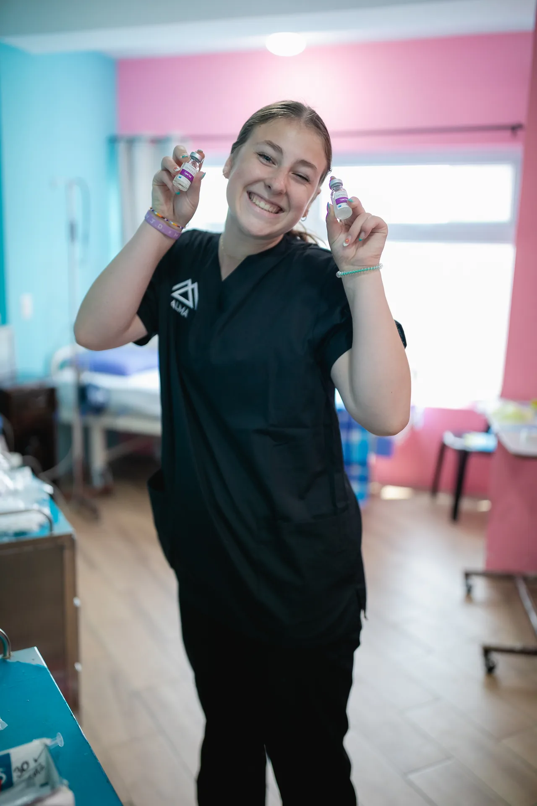
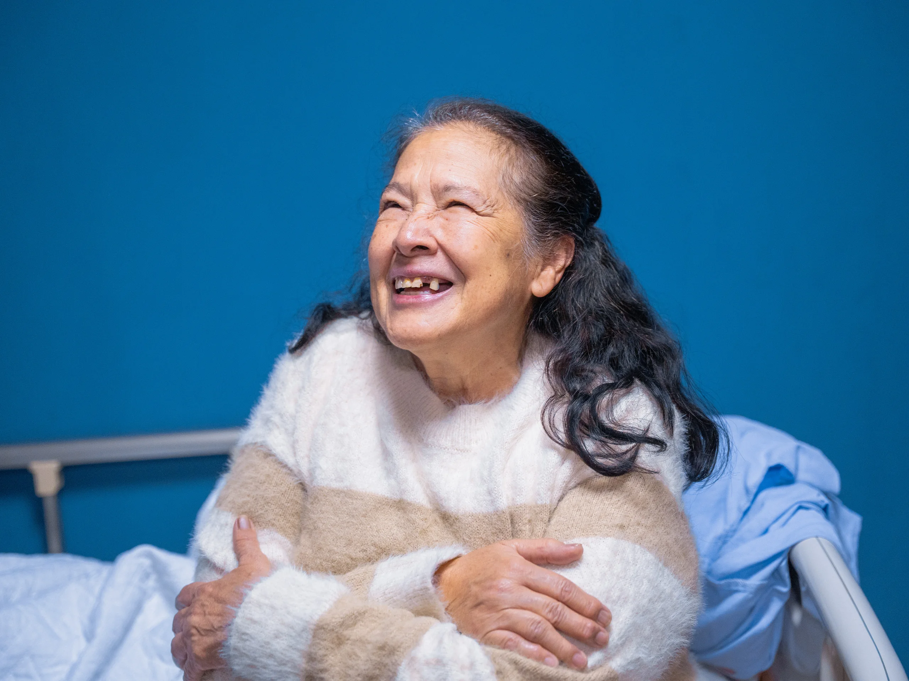
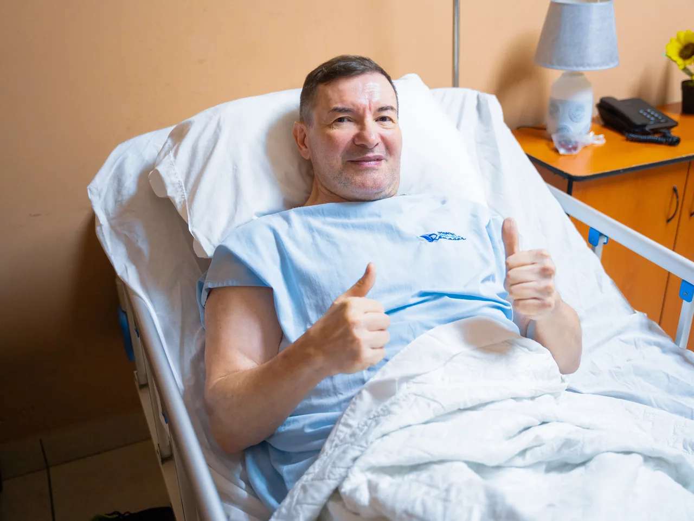

Surgical missions
U.S. surgical teams operate side by side with Guatemalan surgeons, three times a year.
See the missionsA Love for Missions Abroad · Serving Guatemala
Since 2018, ALMA has brought volunteer surgical teams to Guatemala to work hand in hand with local doctors, safely caring for hundreds of patients who had nowhere else to turn.
We fly in with surgeons, nurses and anesthesia. We work beside Guatemalan doctors. We leave behind training, supplies and friends. And every patient goes home with a life that is a little more whole.
Volunteers wanted · 2027
We're building three surgical teams for 2027. Nurses, scrub techs, anesthesia providers, surgeons, interpreters and non-medical helpers all have a place.
 Apr16–24 Open to volunteersENT and General SurgeryCentro Médico Renacer, Guatemala City Jun11–19 Open to volunteersArthroscopy, GI / Endoscopy and GynecologyCentro Médico Renacer, Guatemala
Apr16–24 Open to volunteersENT and General SurgeryCentro Médico Renacer, Guatemala City Jun11–19 Open to volunteersArthroscopy, GI / Endoscopy and GynecologyCentro Médico Renacer, Guatemala  Oct8–16 Open to volunteersTotal JointsCentro Médico Renacer, Guatemala
Oct8–16 Open to volunteersTotal JointsCentro Médico Renacer, Guatemala Why ALMA exists
In Guatemala's highlands, many clinics don't have the staff, the medication or the instruments they need. ALMA fills that gap with volunteer surgeons, anesthesia providers and nurses who serve alongside Guatemalan professionals, then keep supporting them all year.
“Patients are put on lists, but half of the health care facilities don't have the staff, the medication or the instrumentation they need.”
Mike Oswald, CRNA, ALMA co-founderKootenai Health magazine, 2022


What we do
U.S. surgical teams operate side by side with Guatemalan surgeons, three times a year.
See the missions
Cataract surgery gives patients their independence and their livelihood back.
Support this
Dental checkups and care for children who would otherwise go without.
Support this
Support for Hogar Virgen del Socorro, a physical rehabilitation home for children.
Support this
Supplies and a playground for Escuela Vuelta Grande, and support for a special needs school.
Support this
Continuing education that strengthens Guatemalan doctors, nurses and staff.
Support thisWatch
A few minutes inside a mission week: the operating rooms in Guatemala City, the patients and families, and the Guatemalan and American team that makes it happen.
Video not playing? Watch it on Google Drive.
A mission week

01Friday
 02
02 Saturday
 03
03 Sunday
 04
04 Mon – Wed
 05
05 Thu – Fri

06Saturday
Give where it's needed now
ALMA has no paid U.S. staff and very low overhead, so your gift goes almost entirely to direct care.
Keeps local coordinators, logistics and year-round follow-up care running.
Advanced Trauma Life Support certification for a Guatemalan clinician on our team.
For the children of Escuela Vuelta Grande.
Hogar Virgen del Socorro, a physical rehabilitation home for children.
Totals from ALMA's Givebutter campaigns as of November 22, 2026.


Evelinda's story
Evelinda was born with webbed fingers on both hands. On his first ALMA trip in 2021, Kootenai Health surgeon Dr. Patrick Mullen operated on her, with her mom, Juana Lopez, close by. Months later the family sent videos of her hand therapy, and Dr. Mullen hopes to return to operate on her other hand.
Read more stories →Faces of ALMA




Follow along
Mission updates, patient stories and behind-the-scenes moments, straight from our Instagram and Facebook.
Serve on a surgical team, sponsor a volunteer, or give so one more patient can walk, see, or eat without pain.